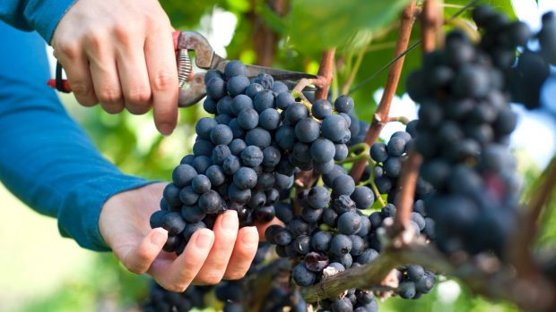

El sabor de la familia en tu mesa
Cosechamos las mejores uvas en nuestra huerta familiar. Luego seleccionamos las mejores para añejarlas en nuestros barriles, logrando así un proceso único basado en el arte del vino.
Nuestros viñedos
Cosechamos nuestras uvas a partir de un extenso proceso de selección a través de distintas pruebas con distintos sommeliers de primer nivel. Este proceso nos certifica para afirmar que brindamos la mejor selección individualizada de uvas taninas.
